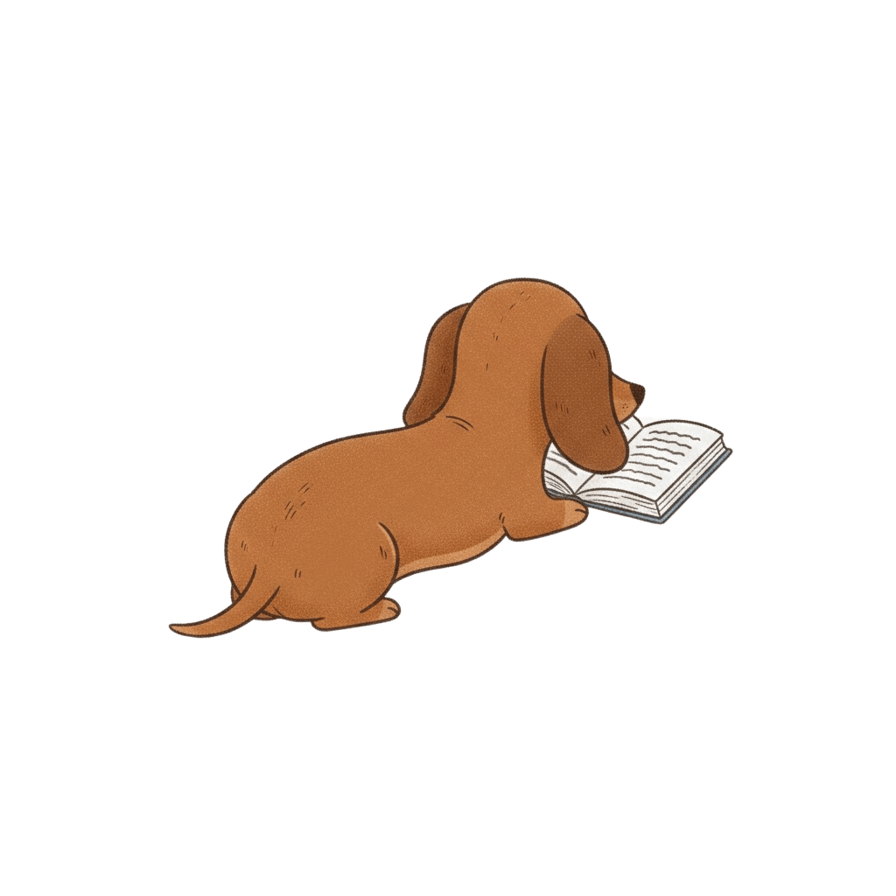
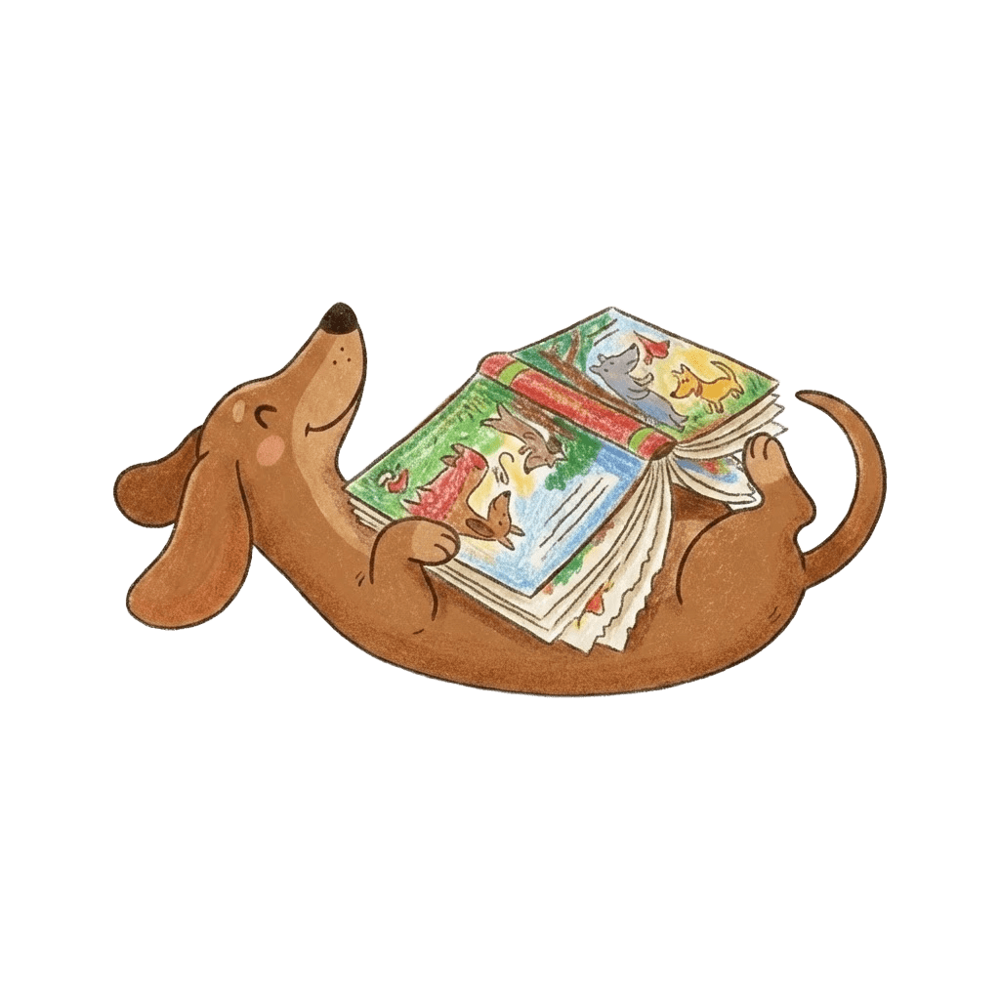
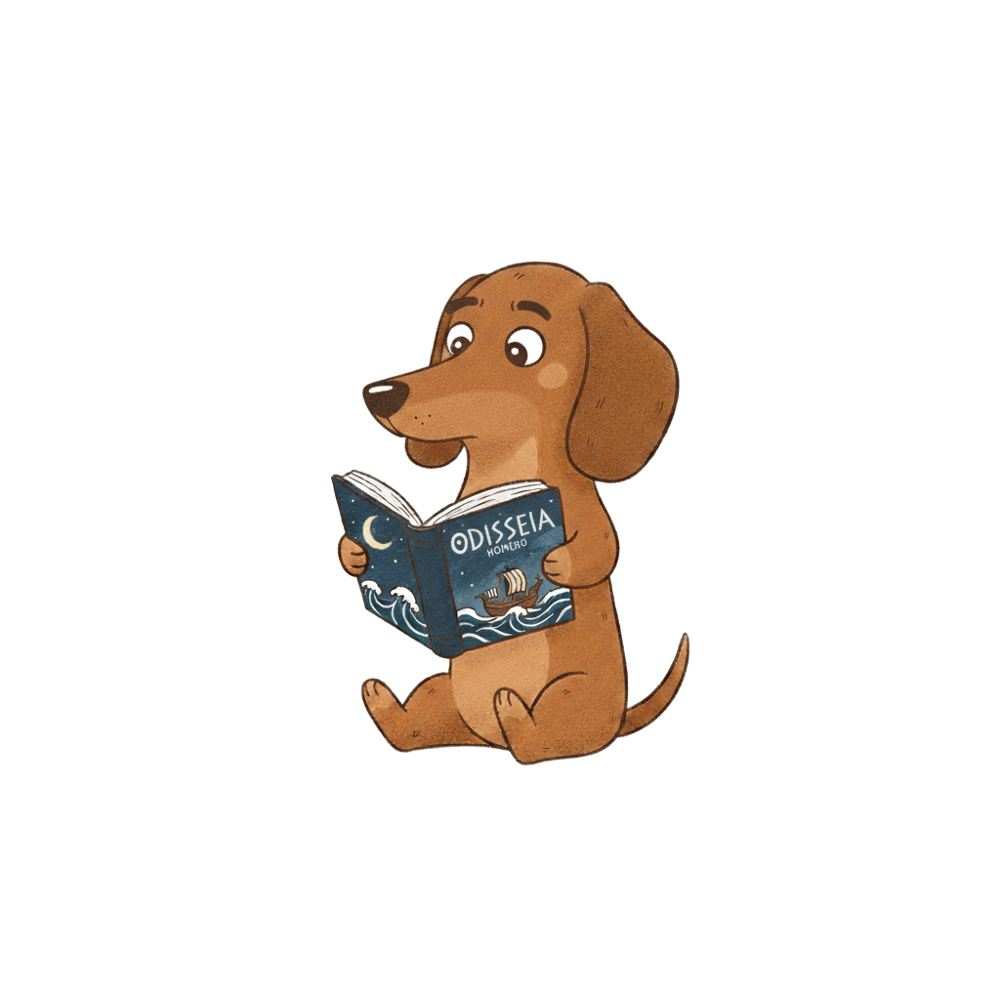
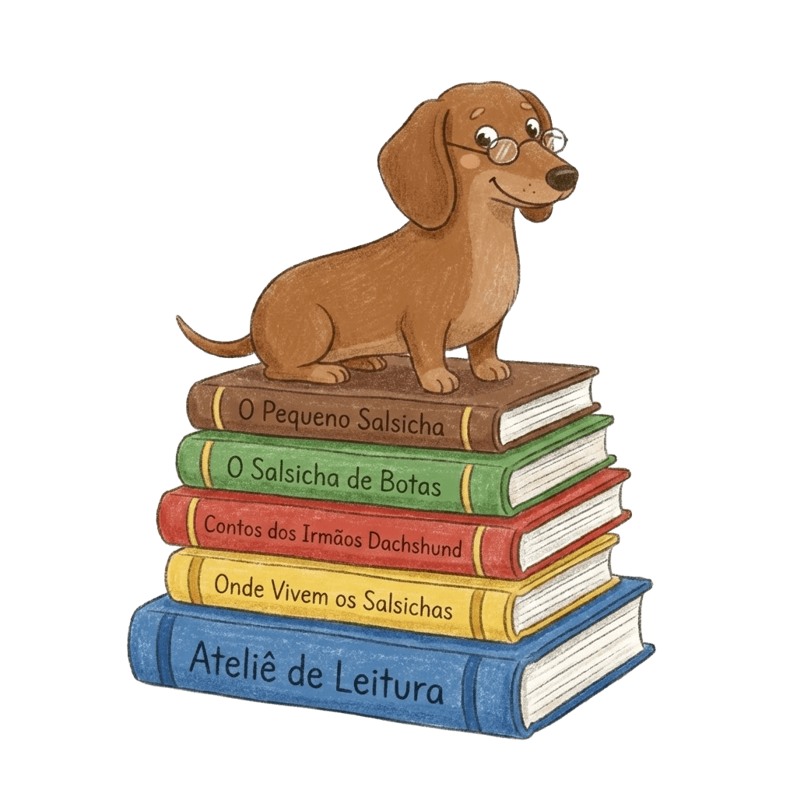

Educação Literária & Mediação
Propostas para 2026
Apresentação
Gabrielly Sierra é educadora e especialista em mediação literária, com foco na formação de leitores competentes e críticos. Com sólida formação acadêmica, é licenciada em Ciências da Educação pela Universidade de Coimbra, mestre em Educação pela Universidade de Lisboa e especialista em Literatura Infantil e Juvenil pela Universidade de Caxias do Sul. Sua pesquisa se dedica a investigar como a literatura dialoga com as infâncias e com temas contemporâneos.
Diferenciais de Atuação:
- Mediação de leitura literária: projetos que vão além da contação de histórias, focando na literacia e na fruição estética.
- Experiência ampliada: atuação com formação de professores, bibliotecários e projetos intergeracionais (de crianças a idosos).
- Alinhamento curricular: propostas desenhadas para dialogar com os projetos pedagógicos da escola e com a Base Nacional Comum Curricular (BNCC).
Abaixo, apresento propostas para somar ao calendário pedagógico da sua instituição.

Intervenção Literária (sessão única)
Ideal para datas comemorativas, aberturas de projetos ou feiras literárias. Uma experiência imersiva de mediação de leitura seguida de uma prática artística.
- Público: Educação Infantil e Fundamental I.
- Duração: 50 min à 1h (por turma).
- Investimento: R$600,00 por sessão/turma.
Residências Literárias (projetos sequenciais)
Percursos de aprofundamento e construção de vínculo. A escola pode escolher entre duas metodologias:
OPÇÃO A: LEITURA E PROCESSOS DE CRIAÇÃO
Foco: Arte, Materialidade e Experimentação. Um laboratório onde investigamos não apenas a história, mas como o livro é feito. As crianças experimentam técnicas artísticas inspiradas nas ilustrações, resultando em produções autorais que podem ser expostas na escola.
Dinâmica: Leitura mediada + Oficina de criação manual (Ateliê).
Público: Ensino Fundamental I (Anos Iniciais).
Investimento: R$ 1.800,00 (Ciclo de 4 encontros por turma). 👉 Ver portfólio visual deste projeto

OPÇÃO B: PONTES NARRATIVAS
Foco: Pesquisa, Autonomia e Família. Um projeto desenhado para expandir a leitura para além da sala de aula. O livro atua como disparador para uma pesquisa que a criança realiza em casa e retorna para socializar.
Dinâmica: O projeto intercala sessões de mediação na escola com etapas de investigação em grupos de obras de arte que aparecem no livro O Dia da Festa, de Renato Moriconi, fortalecendo a oralidade e a construção comunitária de sentidos.
Público: Ensino Fundamental II (Anos Finais).
Investimento: R$ 1.800,00 (Ciclo de 4 encontros por turma). 👉 Ver portfólio visual deste projeto


Formação de Professores
Ofereço percursos formativos desenhados para aprofundar a relação entre currículo e literatura. A escola pode escolher o formato (carga horária) e o tema que melhor atende à sua demanda atual.
FORMATOS:
- Opção A (Curta duração): Palestra de 1h30 | Investimento: R$ 950,00.
- Opção B (Longa duração): Oficina prática de 4h (turno) | Investimento: R$ 1.600,00.
TEMAS (2026):
TEMA A: Leitura, Escrita e Literatura na Educação Infantil
Foco: Alfabetização e Letramento Literário.
Ementa: Como tornar a literatura o eixo central de projetos pedagógicos, integrando a escuta das infâncias com as práticas de leitura e escrita. Ideal para alinhar a equipe às competências da BNCC.
TEMA B: O Livro Ilustrado – Leitura e Mediação
Foco: Educação Estética e Visual.
Ementa: A leitura além do texto verbal. Exploramos como o diálogo entre palavra e imagem constrói sentidos complexos. Uma formação técnica para afinar o olhar do mediador diante de obras contemporâneas.